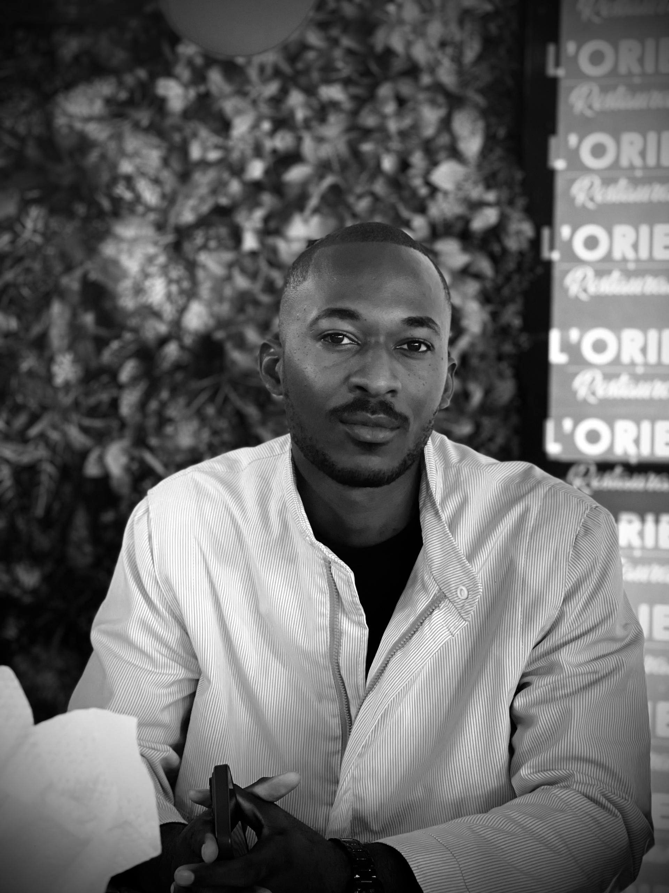

Experience
Industrial & Offshore Experience
Experience in oil & gas operations and industrial environments, working on real production systems and technical operations in complex conditions.

Engineering student with hands-on experience in industrial systems and innovation, building impactful solutions for Africa’s development.
Contact Me Accéder à mon CVI am an engineering student at UCAC-ICAM with a strong background in industrial maintenance, instrumentation and production systems. With hands-on experience in the oil & gas sector and exposure to strategic and entrepreneurial thinking through the ESCP IRA program, I combine technical expertise with a broader vision of innovation and impact. I am particularly interested in developing solutions that improve industrial efficiency, access to resources, and sustainable development in Africa.
Experience in oil & gas operations and industrial environments, working on real production systems and technical operations in complex conditions.
Worked on offshore oil installations at Perenco, ensuring production monitoring and contributing to operational reliability in a high-risk environment.
Designed piping and structural plans and developed 3D models using AutoCAD during my internship at Ponticelli.
Contributed to the feasibility study of a digital credit solution in Senegal aimed at improving financial inclusion and access to funding.
Involved in initiatives focused on social impact, community engagement and responsible innovation, with a strong commitment to sustainable development in Africa.
UCAC-ICAM – Engineering program in innovation & entrepreneurship ESCP Business School – International program (IRA) Strong combination of technical expertise and strategic thinking.
I aim to contribute to Africa’s development by building innovative and sustainable engineering solutions adapted to local realities. My goal is to bridge industrial expertise, digital innovation and entrepreneurship to create systems that improve productivity, access to services and economic opportunities.
Email: dieunome.diamoneka@2027.ucac-icam.com
Phone: +242 06 528 1374 (Whatsapp)
LinkedIn: View my profile →